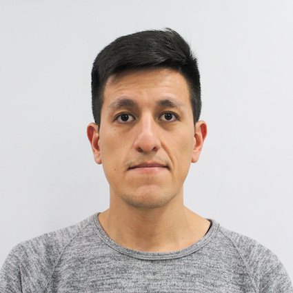

Curriculum Vitae

Fernando Rodrigo Aguilar Dorado
Resumen
Estudiante de Informática aplicada en proceso de formación, con conocimientos básicos de diversos lenguajes de programación en búsqueda de desarrollo profesional en el área. Cuento con más de 10 años de experiencia en soporte técnico y atención especializada de clientes, capacidad de realizar diferentes tareas en simultáneo y manejo de trabajo con fechas de entrega límites. Si hay algo que me caracteriza es la pasión por el constante aprendizaje y desarrollo tanto profesional como personal
Datos personales
- Celular: 1122513924
- Correo: altekfer@gmail.com
- Domicilio: Viamonte 2506
Formación
- Tecnicatura superior en Informática aplicada - UTN INSPT
- Técnico Electrónico - E.T. Nº12 D.E. 1º "Lib. Gral. San Martin"
- Escuela primaria - Onésimo Leguizamón Esc. Nº3 D.E.1
- Bootcamp Fullstack Engineer - Educación IT
Experiencia Laboral
- Macstation - Técnico Certificado Apple - Sept/22 a Oct/23
- iPoint - Técnico Certificado Apple - May/22 a Ago/22
- Atento - Customer Service/ Help Desk - Mar/18 a Mar/22